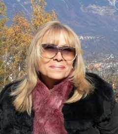

Lo que no decimos...
Lo que no decimos...
| Autor: Graciela Bucci (Argentina) |
¡Nuevo! El quiebre de la historia
El quiebre de la historia
“(..) Cada detalle
aguarda un orgánico estallido,
pero el conjunto fija el tormento hasta el fin de los
tiempos.
Un solo clavo y se acaba la vieja danza.”
“Los pies en el Cristo de Grunewald” Joaquín Gianuzzi
de él quedan un puñado de escombros
una frase desarticulada
y el espacio vacío.
|
 |
Graciela Bucci
Datos biográficos y literarios Nació en Capital Federal, Buenos Aires, Argentina. Cursó estudios Universitarios en la Facultad de Ciencias Bioquímicas de la Universidad Nacional de La Plata (Buenos Aires). Es narradora, poeta, ensayista. Su libro de cuentos breves: Detrás de las palabras... el eco , fue galardonado con la Faja de Honor de la Sociedad Argentina de Escritores (SADE); también recibió este premio en poesía (2009) por el poemario Las fronteras posibles.
El poemario Un orden diferente, mereció la Primera Mención de Honor en el Concurso Internacional organizado Las la Universidad de Lomas de Zamora, Buenos Aires, Argentina.
Ha obtenido numerosos premios a nivel nacional e internacional.En mayo 2008 se filmó un cortometraje basado en su cuento Frascos.
En julio 2009 hizo un CD de Videopoemas: Decretar el olvido.En noviembre de 2011 presentó su libro de cuentos si decir basta.
En el 2012 presentó el poemario “abrir las puertas de par en par”.
En junio 2013 editó el libro “Poemas del fin de mundo” en Estados Unidos, formato digital.
Algunos de sus poemas fueron seleccionados para participar del espectáculo “Tangos y Susurros”(presentado en teatros de Argentina e Italia).
Participó con sus poemas en la parte 18va. de la Antología Poesía Argentina Contemporánea de la Fundación Argentina para la Poesía. Sus cuentos y poemas y ensayos forman parte de 14 antologías del país y del exterior. Ha ganado numerosos premios a nivel nacional e internacional. Forma parte de la Comisión Directiva de la Asociación Americana de Poesía, miembro de la Comisión de Cultura de la Fundación El Libro representando a la SADE, miembro de la Comisión de Cultura del Instituto Latinoamericano y Cultural Hispánico con sede en California (ILCH), del grupo A.L.E.G.R.I.A.; miembro de la Sociedad Argentina de Escritores (S.A.D.E.), del Círculo de Cultura Panamericano de New York, Grupo Literario Té con Palabras, Gente de Letras. Actúa como jurado en concursos literarios nacionales e internacionales.
Sus obras, tanto en poesía como en narrativa, fueron traducidas al inglés, alemán, portugués, catalán y francés.
En febrero de 2010, fue Escritora Invitada del Año en el Festival Hispano del Libro realizado en Houston –Texas (EEUU), mayo 2010 ofreció un recital poético en el Interamerican Campus del Miami Dade College y disertó en el Koubek Center de la Universidad de Miami. En julio 2010, participó como poeta invitada, en el XXX Congreso del Círculo de Cultura Panamericano realizado en la Universidad de Miami. En mayo 2011 fue invitada por el Consulado Argentino en Uruguayana -Brasil-para participar de un recital poético.
|
Musicalización: Hojas muertas...Gentileza de Péter Bustamante y su piano mágico
Volver